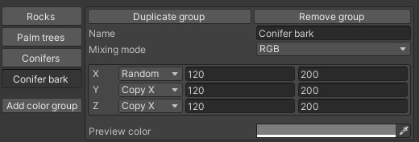
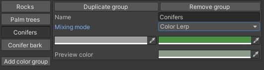
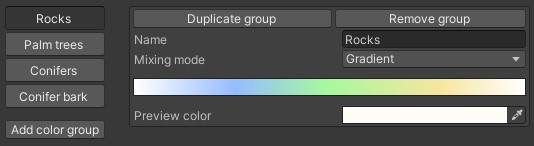

Group mixing modes
You can choose from 4 options:
-
RGB: You can specify Red, Green, and Blue values within 0-255. You can choose from Fixed, Random, or Copy X/Y/Z like in the object layer's transformation settings.

- HSV: You can specify Hue, Saturation, and Value values within 0-255. Otherwise this is the same as RGB Mode
-
Lerp: You can specify two separate colors, and the system gonna get a value between the two randomly

-
Gradient: You can specify a color gradient, and the system gonna get a color from it randomly
